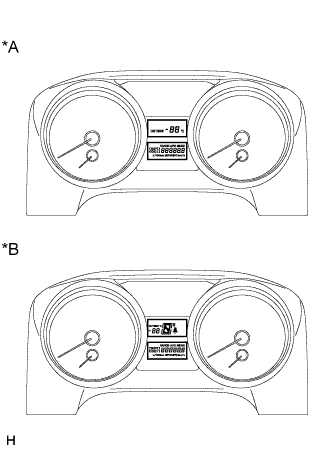
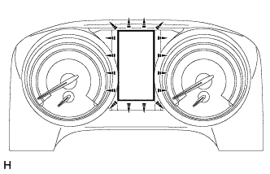

СИСТЕМА ИЗМЕРИТЕЛЬНЫХ ПРИБОРОВ И ИНДИКАТОРОВ > ПРОВЕРКА РАБОТЫ СИСТЕМЫ |
| ПРОВЕРЬТЕ ИНДИКАТОР/КОНТРОЛЬНУЮ ЛАМПУ |
Проверьте следующие индикаторы и контрольные лампы
| Индикатор/контрольная лампа | Положение переключателя | Заданные условия |
| Контрольная лампа BRAKE | Замок зажигания: OFF (ВЫКЛ) → ON (ВКЛ) | Загорается на 3 с |
| Контрольная лампа ABS | ||
| Контрольная лампа SLIP*1 | ||
| Контрольная лампа TRC OFF*2 | ||
| Контрольная лампа VSC OFF*1 | ||
| Контрольная лампа CRAWL*3 | ||
| Контрольная лампа системы помощи при спуске по склону*4 | ||
| Контрольная лампа KDSS*5 | ||
| Контрольная лампа движения в режиме Eco*6 | ||
| Контрольная лампа замены масла*2, *7, *8 | ||
| Контрольная лампа OIL LEVEL*8, *9 | ||
| Контрольная лампа T-BELT*2, *8, *10 | ||
| Контрольная лампа FUEL FILTER & SEDIMENTER*2, *8, *11 | ||
| Контрольная лампа SEDIMENTER*2, *9, *10 | ||
| Контрольная лампа SPEED LIMIT*12 | ||
| Контрольная лампа PCS*13 | ||
| Контрольная лампа AFS OFF*14 | ||
| Контрольная лампа PPS*1 | ||
| Главная контрольная лампа аварийного состояния*15 | ||
| Контрольная лампа SRS | Замок зажигания: OFF (ВЫКЛ) → ON (ВКЛ) | Загорается на 6 с |
| Контрольная лампа CHARGE | Замок зажигания: OFF (ВЫКЛ) → ON (ВКЛ) |
|
| Контрольная лампа OIL PRESSURE | ||
| Контрольная лампа A/T TEMP*6 | ||
| MIL | ||
| Контрольная лампа SIL*7, *8, *16 |
| ПРОВЕРЬТЕ СПИДОМЕТР |
Подсоедините портативный диагностический прибор к DLC3.
Установите замок зажигания в положение ON (ВКЛ).
Включите портативный диагностический прибор.
Войдите в следующие меню: Powertrain / Engine and ECT / Data List.
| Стандартные показания | Допустимый диапазон |
| 40 миль в час | 42 - 44,5 миль в час |
| 80 миль в час | 83,1–87,1 миль в час |
| 120 миль в час | 124,7–129,6 миль в час |
| Стандартные показания | Допустимый диапазон |
| 40 км/час | 41,7 - 46,2 км/час |
| 80 км/час | 83,4 - 88,4 км/час |
| 120 км/час | 125,1 - 130,6 км/час |
| 160 км/час | 166,2 - 173,2 км/час |
| 200 км/час | 207,7 - 215,7 км/час |
| Стандартные показания | Допустимый диапазон |
| 20 км/час | 20,7-24,7 км/час |
| 40 км/час | 41,4 - 45,9 км/час |
| 60 км/час | 62,1 - 66,6 км/час |
| 80 км/час | 82,8 - 87,8 км/час |
| 100 км/час | 103,5 - 107,5 км/час |
| 120 км/час | 124,2 - 129,2 км/час |
| 140 км/час | 144,9 - 149,9 км/час |
| 160 км/час | 165,6 - 170,6 км/час |
| 180 км/час | 186,3 - 191,3 км/час |
Проверьте величину отклонения от показаний спидометра.
| ПРОВЕРЬТЕ ТАХОМЕТР |
Подключите испытательный тахометр и запустите двигатель.
Сравните показания портативного диагностического прибора и тахометра.
| Стандартная индикация (об/мин) | Допустимый диапазон Значения в скобках даны для справки |
| 700 | 630–770 |
| 1000 | (900 - 1100) |
| 2000 | (1850 - 2150) |
| 3000 | 2800 - 3200 |
| 4000 | (3800 - 4200) |
| 5000 | 4800 - 5200 |
| 6000 | (5750 - 6250) |
| 7000 | 6700 - 7300 |
| 8000 | 7700 - 8300 |
| ПРОВЕРЬТЕ ИЗМЕРИТЕЛЬНЫЕ ПРИБОРЫ И ИНДИКАТОРЫ |
Подсоедините портативный диагностический прибор к DLC3.
Выполните диагностику в режиме Active Test (Нажмите здесь).
| ПРОВЕРЬТЕ КОНТРОЛЬНУЮ ЛАМПУ/ИНДИКАТОР |
Подсоедините портативный диагностический прибор к DLC3.
Выполните диагностику в режиме Active Test (Нажмите здесь).
| ПРОВЕРЬТЕ МУЛЬТИИНФОРМАЦИОННЫЙ ДИСПЛЕЙ (для моделей с аналоговым щитком приборов) |
|  |
Подсоедините портативный диагностический прибор к DLC3.
Выполните диагностику в режиме Active Test (Нажмите здесь).
| *A | для моделей с механической трансмиссией |
| *B | для моделей с автоматической трансмиссией |
| ПРОВЕРЬТЕ МУЛЬТИИНФОРМАЦИОННЫЙ ДИСПЛЕЙ (для моделей с щитком приборов с оригинальной системой подсветки "Optitron") |
|  |
Подсоедините портативный диагностический прибор к DLC3.
Выполните диагностику в режиме Active Test (Нажмите здесь).